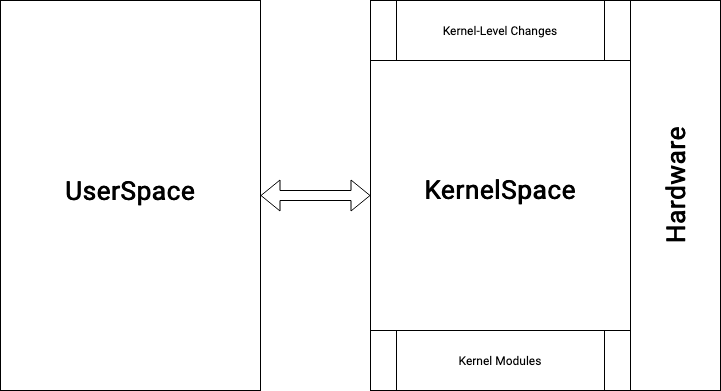

Your browser doesn't support the features required by impress.js, so you are presented with a simplified version of this presentation.
For the best experience please use the latest Chrome, Safari or Firefox browser.
Talking to the Linux Kernel
with Python and eBPF
Navin Pai
#PyConIndia2023
Navin Pai. M@dMAx. Goa. Full Stack. OpsVerse. Machine Learning. Natural Language Processing. Practical Deep Learning. IIIT-Bangalore. Game Theory. Man Utd. Firefox. High Performance Engineering. Goa Engg College. Go Engicos. Philosophy. Peripatetic. Eternal Hacker. Linux Fanboi. Anime. Pythonista. Open Source Everything. @navinpai
The Agenda
- What is eBPF? - Why is eBPF awesome? - Tooling for eBPF - Python + eBPF = 🚀 - Making eBPF part of your arsenal - What next?
- QnA
Talking to the kernel
Talking to the kernel

Kernel Changes: Very slow release and change cycles